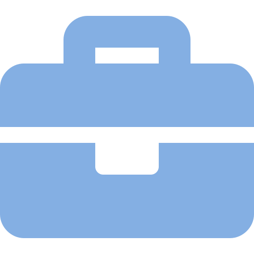

Matteo Rinaldi
Curriculum Vitae
ESPERIENZE PROFESSIONALI

Volontario in Servizio Civile Nazionale - 13/09/2017 - 12/09/2018
Consiglio Nazionale delle Ricerche, Area della ricerca di Genova, Servizio di Documentazione Scientifica (SDS).
Via de Marini, 6, 16149, Genova. - Vai al sito dell'ente
Consiglio Nazionale delle Ricerche, Area della ricerca di Genova, Servizio di Documentazione Scientifica (SDS).
Via de Marini, 6, 16149, Genova. - Vai al sito dell'ente
- Catalogazione di monografie e periodici elettronici.
- Gestione del catalogo GECA RDC.
- Digitalizzazione libri moderni.
Operatore di stampa - 22/06/2015 - 02/08/2015
Postel S.p.A.
Via Multedo di Pegli, 8, 16155, Genova. (e' stata chiusa) - Vai al sito dell'azienda
Postel S.p.A.
Via Multedo di Pegli, 8, 16155, Genova. (e' stata chiusa) - Vai al sito dell'azienda
- Gestione di una o più stampanti durante un turno di lavoro. Caricamento carta, setup, manutenzione, cambio filtri e toner.
Autonomamente ho progettato un semplice sito web per il bed and breakfast di un mio professore, per riassumere quanto fatto durante il percorso scolastico.
Vai al sito di "Soffitta sul mare, B&B"